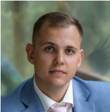

Portfolio
Asmens informacija:
Ernestas Zalanskas
Gimimo data: 1992.05.29 (31 m.)

Turiu 8 metų darbo patirtį korpusinių baldų gamybos įmonėje.
Pareigos ir atlikti darbai:
- Žaliavų tiekimas ( reikalingo žaliavų kiekio apskaičiavimas, medžiagų užsakymas iš
tiekėjų, kainų derinimas, alternatyvių medžiagų paieška.)
- Paslaugų kainų skaičiavimas
- Klientų konsultavimas
- Naujos gamybos organizavimo sistemos (B.MOS) įvedimo į įmonę kuravimo darbai
- Darbuotojų apmokymas dirbti B.MOS programa
- Įmonės elektroninės svetainės sukūrimas
- Įvairių naujovių diegimas įmonėje.
Darbo patirtis:
- 2017.06 - Dabar
Įmonė: UAB Dzūkų baldai
-
Pareigos: Vadybininkas
Klientų konsultavimas, užsakymų priėmimas, užsakymo duomenų suvedimas į Cut
rite programą (baldinių plokščių išklotinių formavimas), paslaugų kainų
skaičiavimas.
-
Vėliau pareiginiai nuostatai pasikeitė: darbas su tiekėjais, medžiagų užsakymas,
vadovavimas gamyboje, darbo centrai: pjovimas, briaunavimas, presavimas,
gręžimas.
-
2015.09 - 2017.06 Įmonė: UAB Alsotana
-
Pareigos: Vadybininkas
Klientų konsultavimas, užsakymų priėmimas, užsakymo duomenų suvedimas į Cut
rite programą (baldinių plokščių išklotinių formavimas), paslaugų kainų
skaičiavimas.
-
2014.07 - 2015.08
Įmonė: UAB Lankava
-
Pareigos: Pardavėjas Klientų konsultavimas apdailos medžiagų skyriuje, darbas su kasos aparatu. Nuo
2015 m. darbas su krautuvu.
Išsilavinimas:
-
2011 - 2014
Mokymosi įstaiga: Alytaus Kolegija
-
Specialybė: Informacinių sistemų technologijos
Laipsnis: Aukštesnysi
Kompiuterinės žinios:
-
Excel
-
Dirbdamas UAB Alsotana sukūriau:
-
skaičiavimo formą, kuri automatizuotai apskaičiuoja reikiamus užsakymui
medžiagų kiekius ir kainas;
-
medžiagų užsakymo formą, kurios pagalba
lengva sekti užsakymų istoriją.
-
Dirbdamas UAB Dzūkų baldai sukūriau gamybos centrų veiklos raportavimo
sistemą.
-
Wordpress
-
Dirbdamas UAB Dzūkų baldai sukūriau internetinę svetainę
http://www.dzukubaldai.lt
Back to main page